Project 01 — Design & Fabrication
A Camera Mount for the Nickel Telescope
I designed and machined the mount that holds a new cryogenically cooled science camera and its shutter on the 1-meter Nickel telescope at Lick Observatory. The work took the mount from SolidWorks models through machine-shop fabrication to a test fit on the telescope.
- Where
- UC Observatories / Lick Observatory
- Program
- Akamai Internship, 2024
- Role
- Design, drafting & machining
- Tools
- SolidWorks, lathe, mills, press brake, welder
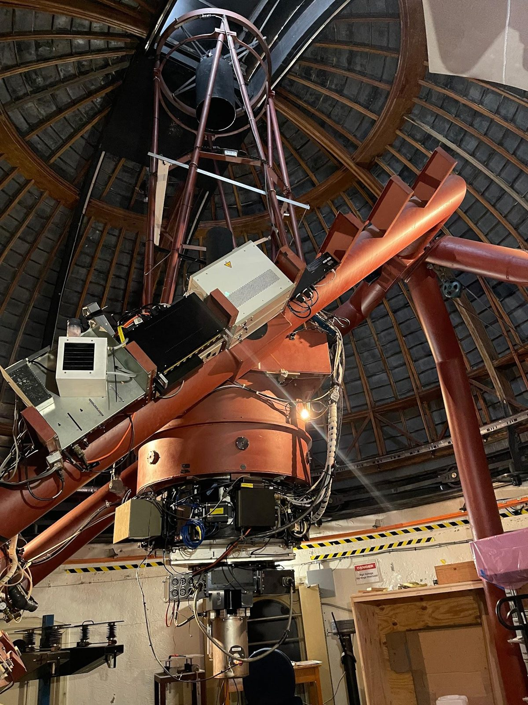
Background
Nickel is used by astronomers and students to screen targets before follow-up on larger telescopes, which saves valuable time on those bigger instruments.
Its existing CCD camera had become unreliable and high-maintenance, since it needed liquid-nitrogen cooling. The observatory replaced it with an Oxford Instruments iKon-L 936, which reaches cryogenic temperatures with water cooling. That upgrade was funded by the Gordon and Betty Moore Foundation.
The new camera arrived without a shutter, so the mount had to hold the camera and a separate shutter, then attach both to the telescope's filter wheel housing.
- Technicians can reach the camera and shutter easily for routine maintenance.
- Fewer electronics on the TUB (telescope utilization bin), so installation and removal are easier.
Design and fabricate a camera mount for the incoming science camera on the Nickel Telescope.
The Assembly
Hover over or tap a part in the list or a numbered balloon on the drawing to find it in the exploded view.
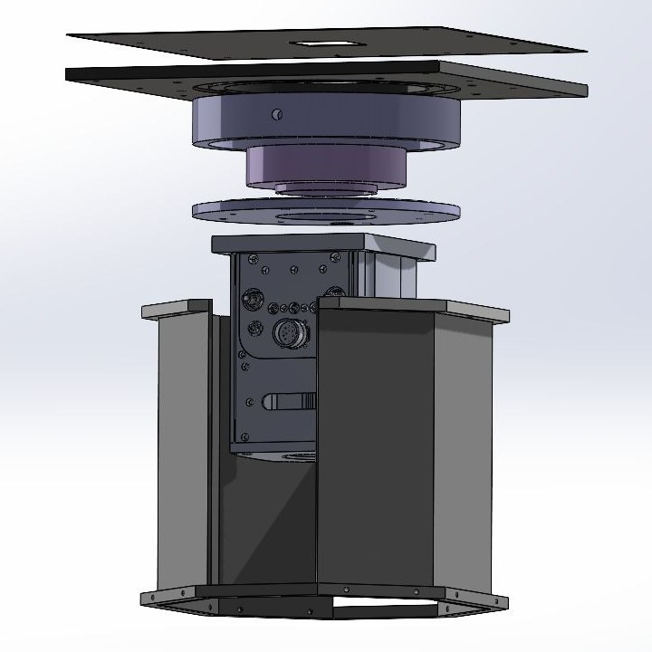
5 1 2 A 3 B 7 6 8| # | Part | Qty | Material |
|---|---|---|---|
| 1 | Base Plate | 1 | Aluminum |
| 2 | Spacer Ring | 1 | Aluminum |
| 3 | Camera (Main) Plate | 1 | Aluminum |
| 4 | Wire Access Insulation | 1 | Acetal |
| 5 | Light Baffle | 1 | Aluminum |
| 6 | Electronics Panel | 2 | Aluminum |
| 7 | Panel Bracket | 2 | Aluminum |
| 8 | Panel Brace | 1 | Aluminum |
| A | Shutter | 1 | Purchased |
| B | iKon-L 936 CCD Camera | 1 | Purchased |
Key Components
Each part went from a CAD model to a drawing to a finished part on the shop floor.
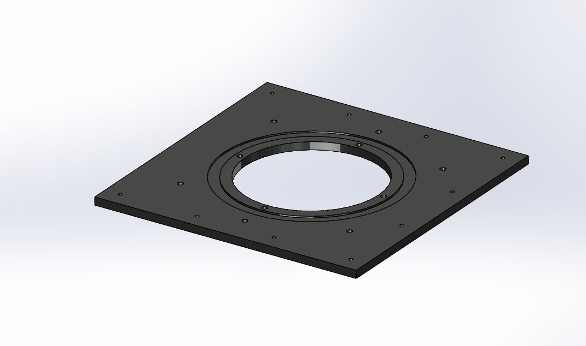
Model
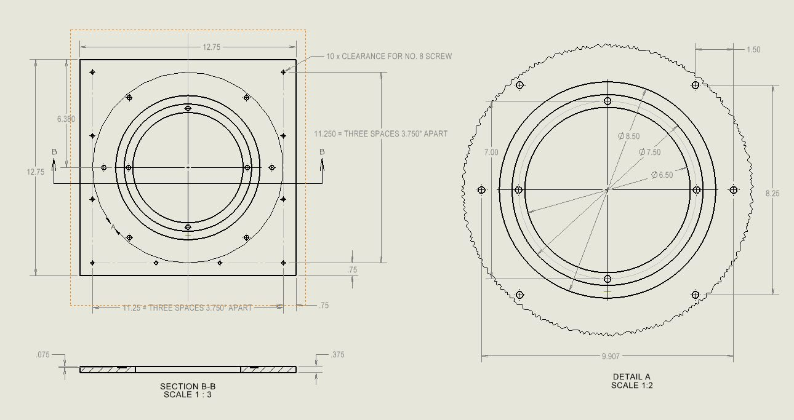
Drawing
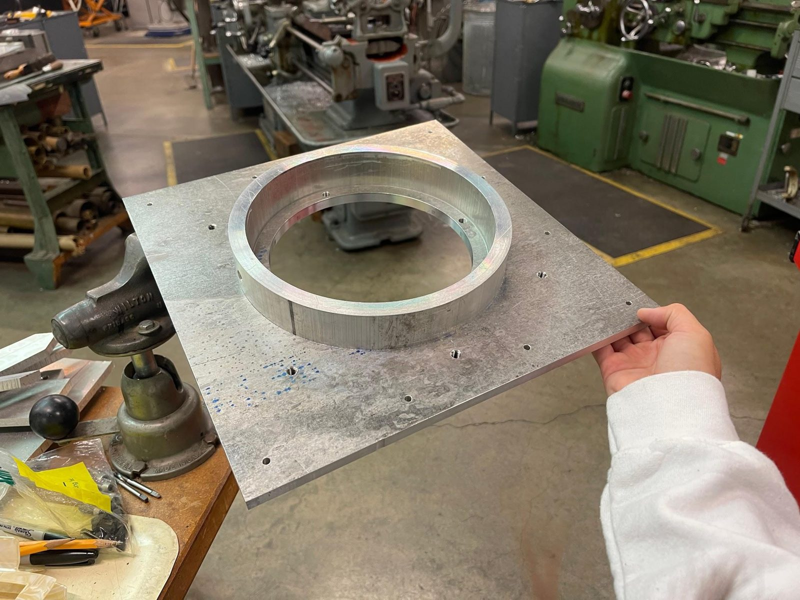
Machined
Design features
- Mounts to the filter wheel housing on the telescope
- Locating lip for alignment, with a press-fit spacer ring
- Mounting holes for every other component
- Nitrogen hose adapter to prevent condensation on the camera window
Fabrication · ⅜″ aluminum stock
- Vertical mill — outer edge, mounting holes, nitrogen hose hole
- CNC mill — center bore
- Lathe — locating lip
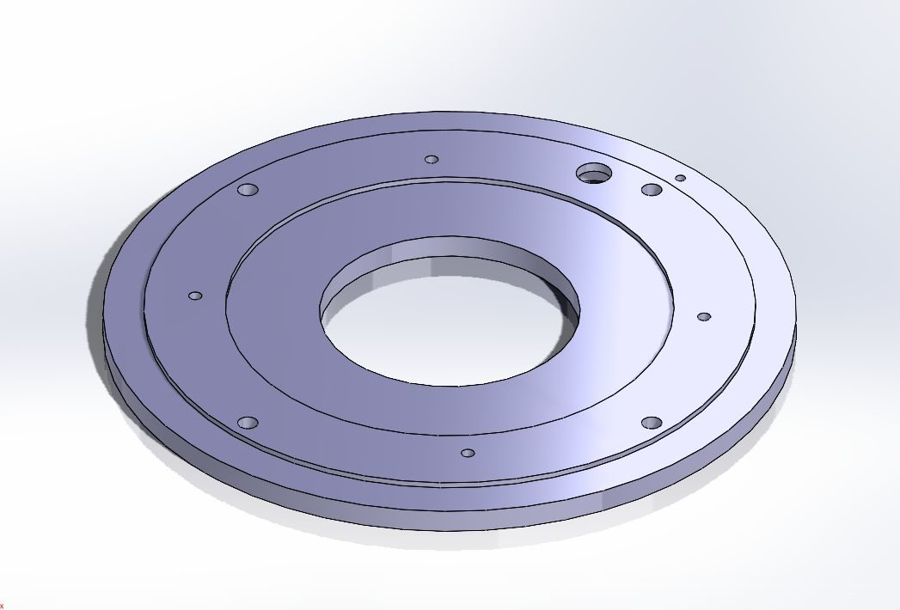
Model
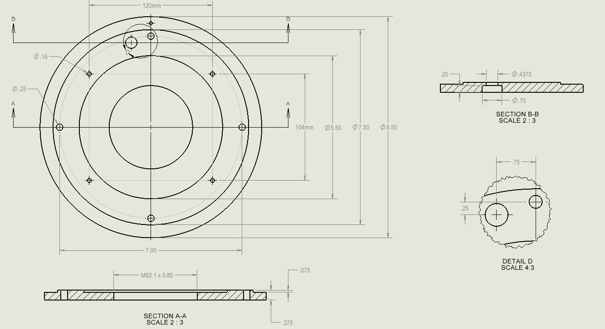
Drawing
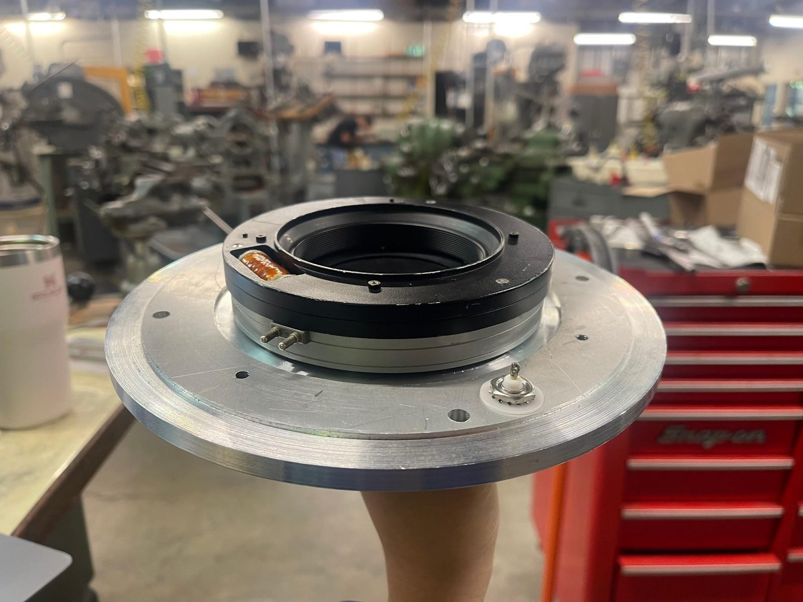
Machined, with shutter
Design features
- Holds both camera and shutter: the shutter screws in from the top and the camera bolts in from the bottom
- Shutter wiring access point with BNC connector
- Light-tight and electrically isolated
Fabrication · ⅜″ aluminum stock
- Lathe — outer and inner edges, threaded inner edge, locating lip
- Vertical mill — bolt pattern to base plate, camera mounting holes, wiring access point
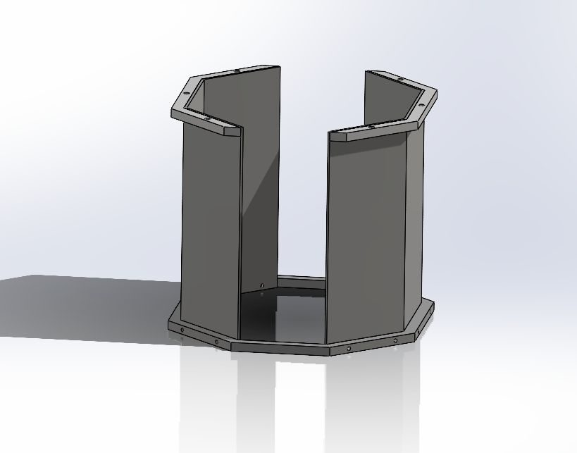
Model
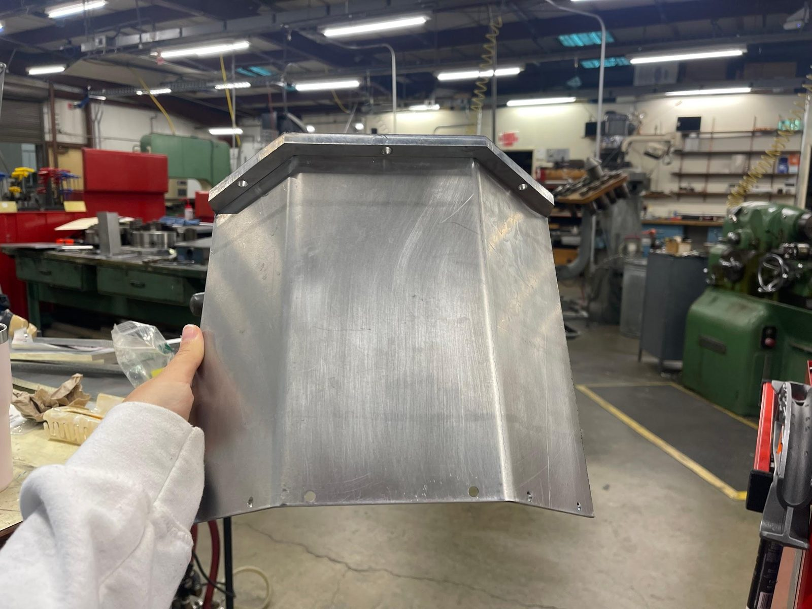
Formed on press brake
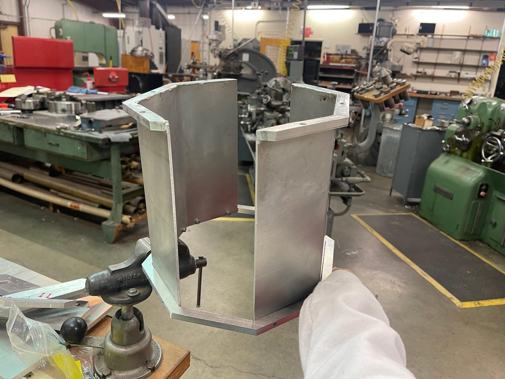
Welded assembly
Design features
- Moves electronics off the telescope and onto the mount
- Sized around standard electronics, with small computers (NUCs) fitting on the sides
- Open on two sides for direct access to the camera
Fabrication · ⅜″ stock & ⅛″ sheet
- Hydraulic press brake — bent the panels
- Vertical mill — panel brackets
- Welder — brackets joined to panels
- CNC mill — panel brace
Process
Design & iterate
Modeled every part in SolidWorks and revised the design with feedback from observatory engineers and machinists.
Fabricate
Machined the parts in the UC Observatories shops on a lathe, vertical mill, CNC mill and press brake, and welded the panel assembly.
Test fit
Assembled the mount and test fit it on the Nickel telescope.
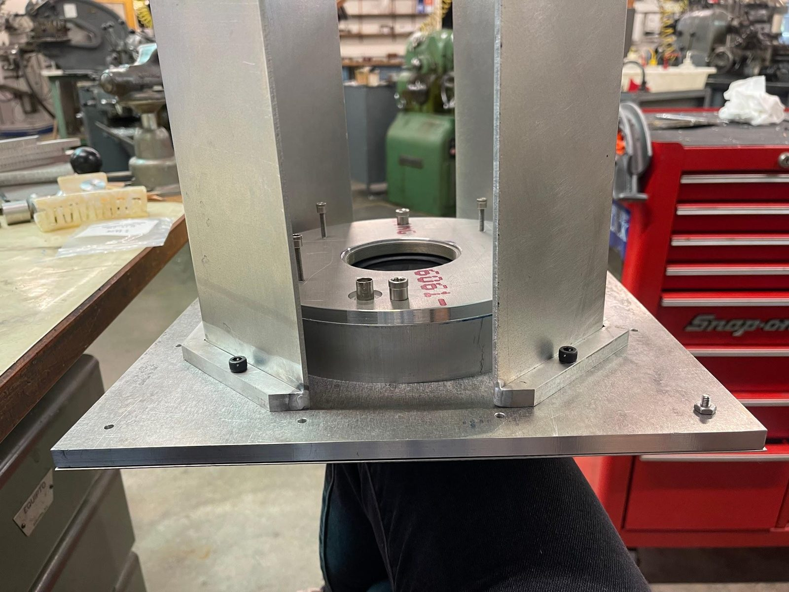
Outcome & What I Learned
[Describe the result: did the mount fit, and is it in use? Then describe one or two lessons from designing parts that you also had to machine yourself.]
Mentors: Pavl Zachary and Kyle Westfall. With thanks to UCO / Lick Observatory, the Institute for Scientist & Engineer Educators, and the Akamai Internship Program.